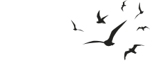
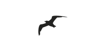

L’indice de dominance représenté en nuances de rouges sur la carte indique le pourcentage qu’occupe le nombre total d’observations pour une espèce au sein de la quantité totale d’observations pour le département. Ainsi, plus le pourcentage de dominance est élevé, plus l’écart dans le nombre d’observations entre l’espèce dominante et le reste des espèces présentes augmente, ceci indique que l’espèce dominante est largement plus observée que les autres espèces.
L'oiseau le plus observé en région PACA est le Goéland Leucophée (Larus michahellis), dominant par sa présence 2 départements (Alpes-Maritimes, Bouches-du-Rhône) du littoral de la région. Il est intéressant de noter que le Goéland Leucophée ne domine pas entièrement les observations du littoral, la Pie bavarde s'impose dans le Var comme l'oiseau le plus observé entre 2023 et 2024.
Il est important de conserver un regard critique sur cette carte car les données d'observations sont des données participatives et non des données à caractère purement scientifique. De plus, un tampon de 5km à été appliqué sur les zones littorales dans le but de ne pas exclure des observations proches des côtes. Ainsi, la carte produite peut être sujette à plusieurs biais qu'il faut prendre en considération.